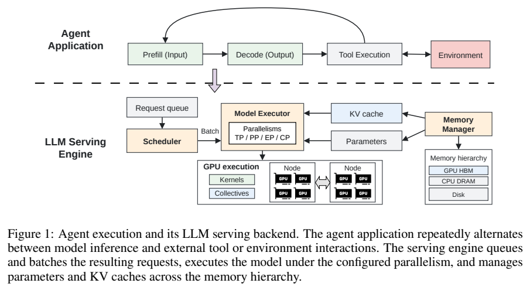
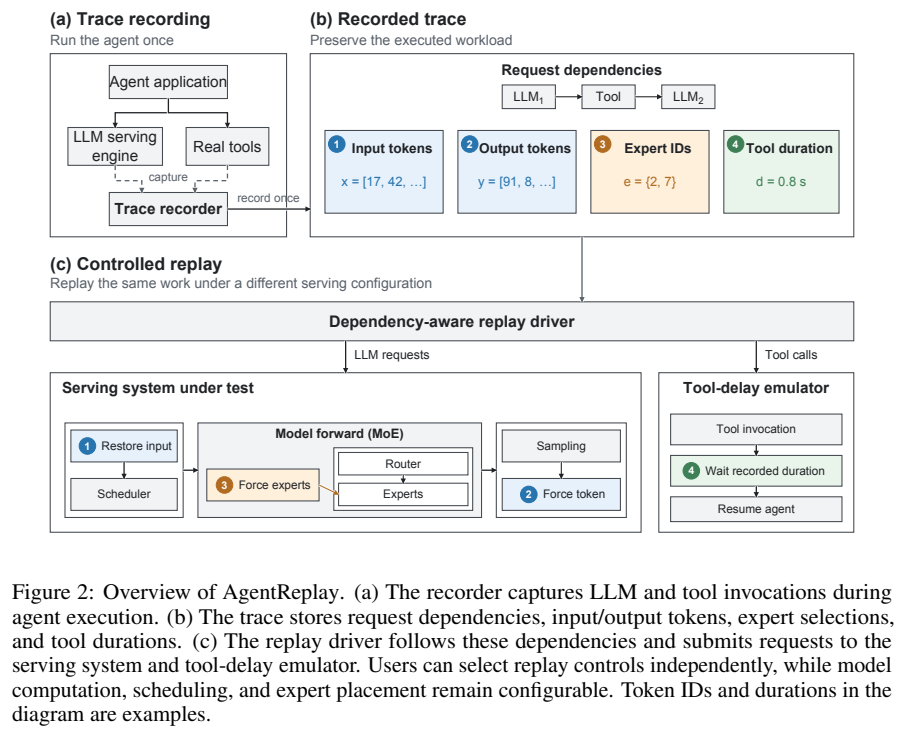
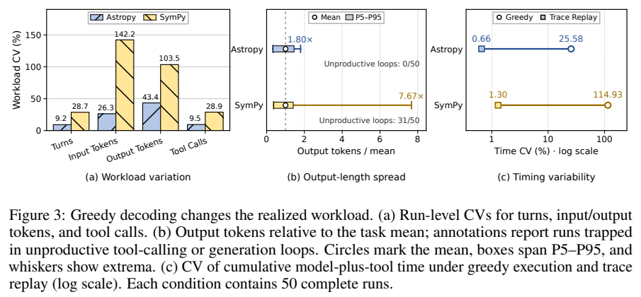
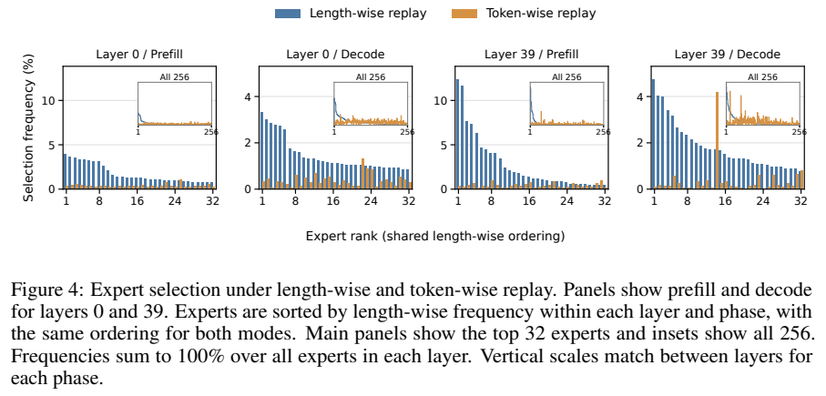
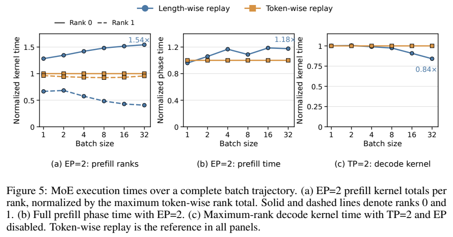
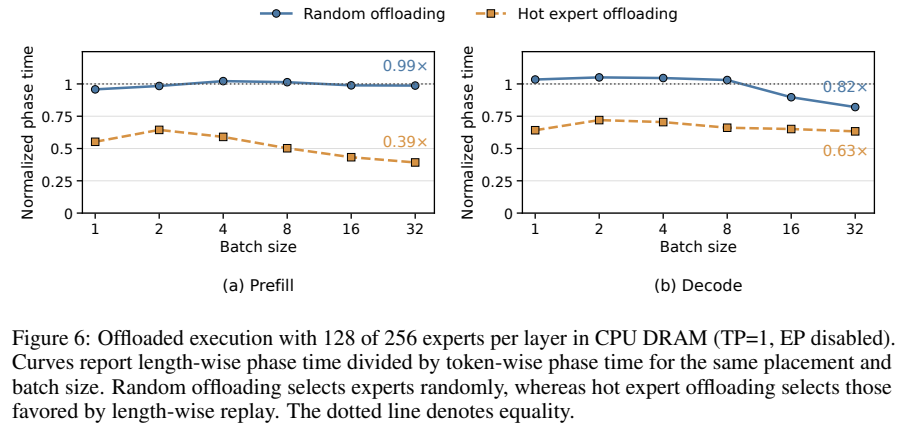

Paper Reading · Serving Systems
解释
AgentReplay 一文的核心是探讨 Agent 运行模式 下部分重放方式（核心是 length-wise）对于 workload 的影响，进而影响 system 功能的衡量。内容上可以概括为四个部分：agent 实际负载分析，影响 workload 的机制，token-wise 的设置，实验。
这篇论文不提出新的推理引擎，也不提出新的 cache 算法。它讨论的是评测方法：当我们说「配置 A 比配置 B 快 1.3 倍」时，怎么保证两次实验跑的是同一份工作。
难点在于 agent 的请求是状态性的：第 t 轮的 prompt 里装着第 t−1 轮的模型输出。系统一旦改变 batch 形状，浮点累加顺序就变，logits 微差可能翻转一个 argmax；这个 token 进入下一轮，可能触发不同的工具调用，改变轮数。系统反过来改变了输入——这是循环依赖，也是全文的起点。
全文逻辑（也是本页的章节顺序）：
从左读到右：① 定义问题；② 拆出四条漂移机制；③ 由机制反推设计；④ 用实验量化偏差。第 4 章每个实验开头都有一句「机制回顾」，可以对照这里看。
普通 serving 的负载是一个请求流：客户端发 prompt，服务端返回，请求之间互不相关。agent 不是。它第 t 轮的 prompt 是「系统提示 + 任务 + 前 t−1 轮的全部模型输出与工具返回」，所以请求有状态、有依赖图（含并发分支与 join），并且被工具执行隔开成间歇的。

解释
图中上半部分是 agent 的请求流程；下半部分则是服务端系统的任务，包括内存管理、参数搬运等。由此可以看出，重放时观察到的各种差异，既包括系统带来的差异，也包括workload 本身的差异——只有尽量压低 workload 带来的性能波动，才能真正看出系统优化带来的改变。
论文把 workload 记成五元组 τ = (G, X, Y, E, D) 再加一个到达策略 A：G 是依赖图，X/Y 是输入输出 token，E 是可选的 expert 选择，D 是工具时长。X、Y 存的是 token id 序列，不是长度——文本到 token 的映射不唯一（tokenizer、chat template 都会影响），重放时再 encode 可能得到不同序列，前缀就断了；而长度不携带内容，第 2 章所有机制都依赖内容。
请求进入服务端之后，经过队列、scheduler 组 batch、在 TP/PP/EP/CP 下执行、由 memory manager 在 HBM/DRAM/Disk 之间搬参数和 KV。这一层是被测系统。于是评测目标可以写成：给定同一份 trace τ，比较 C(S₁, τ) 与 C(S₂, τ)。
| 固定在 workload 侧 | 留给 system 侧 |
|---|---|
| token 序列 X、Y | batching 与调度顺序 |
| 依赖图 G、工具时长 D、到达 A | cache 放置与驱逐 |
| expert 的逻辑身份 E | expert 的物理放置、kernel、并行度 |
这条线不是洁癖。若两边同时变，观测到的差异就无法分解：
Δ_observed = Δ_system + Δ_workload + 交互项你想测 Δ_system，但 Δ_workload 可能比它大一个数量级——后面 §4.1 里 SymPy 的累计时间 CV 超过 100%，比多数系统优化带来的收益还大。
这一章只讲「为什么会变」，不放实验；每条机制后面标注它在第 4 章对应哪组证据。四条机制不是并列的四种现象，而是同一条因果链在不同位置的断点：token 会变（机制一），变了之后前缀失效（机制二）、路由失效（机制三），而工具时长决定了下一轮什么时候到（机制四）。
解释
机制一首先对greedy进行了分析，指出采用贪心采样并不能保证workload的近似，核心逻辑在于系统配置改变会影响token的计算过程，进而改变greedy的取值，再进一步改变后续内容生成，影响workload
temperature = 0 只去掉了采样随机性，没去掉数值非确定性：
配置变化（batch 大小 / TP 切分 / reduction 顺序）
→ 同一个 matmul、softmax 的浮点累加顺序变
→ logits 出现 1e-6 级差异 → top-1 与 top-2 接近时 argmax 翻转
→ 第 j 个 token 变了 → 自回归把这一处差异放大到整段两点决定了严重性。第一，它是系统性的：翻转概率取决于 logits 的间隔分布，而长上下文、开放式推理任务里 top-1/top-2 接近的情况很常见。第二，它有放大效应：一个 token 不会停在原地，它进入下一轮 prompt，可能改变工具调用、改变轮数。
解释
机制二聚焦于length-wise replay对前缀缓存重放的影响，本文中的length-wise replay主要指保持token序列长度而token内容用随机值替代的重放方式。在这种重放方式下，产生的输出将无法进行后续的前缀匹配，限制了前缀缓存的匹配长度
只保留长度、不保留内容的重放方式：从记录里读到「这一轮输入 8000 token、输出 200 token」，就造一串 8000 token 的输入喂给模型，输出也按 200 步跑——但这 8000 个 token 具体是什么，和记录无关，通常是随机或合成填充。
它流行的原因是成本：早期 trace 往往只存长度（存真实 token 体积大，还会把 prompt 内容带出去），脱敏之后通常也只剩长度。对纯吞吐测试够用，但对任何「看内容」的机制就不够了。
对照：token-wise replay 用的是记录里的真实 token，长度自然也一致。本节说的断链，就是这两种做法的差别造成的。
前缀缓存按块算内容哈希、在 radix tree 里找最长匹配，命中多少块就跳过多少块 prefill。它的匹配键是 token 内容，且要求从第一个 token 起连续相同。length-wise replay 保留长度、替换内容，于是链条是这样断的：
length-wise 重放替换 token（长度不变）
→ 该块的 content hash 变了
→ radix tree 的匹配在分叉点断开
→ 分叉点之后的所有块都不能命中
→ 这些 token 必须重算 prefill
→ 重放测到的是「更多计算」，而不是「同样的计算」
具体到两轮之间。第 1 轮的输出 c 会被原样拼进第 2 轮的 prompt，夹在「之前的内容」和「工具返回」之间：
第 1 轮：prompt₁ = [系统 + 任务] → 模型输出 c（比如 200 个 token）
工具执行，返回 o
第 2 轮：prompt₂ = prompt₁ + c + o ← token-wise：与记录逐字一致
prompt₂′ = prompt₁ + c′ + o ← length-wise：|c′| = |c|，内容随机
↑
分叉点：c 的第一个 token
前半段 prompt₁ 两边完全一样，所以缓存能一路命中，直到 c 开始之前；c′ 的第一个 token 就和记录不同，匹配从这里断开。注意断点之后的 o 本来和记录一模一样，但它排在断点后面，同样用不上缓存——这就是「只换了一小段，整段失效」的原因。
代价随轮数超线性增长：每轮多算的 prefill ≈ 从分叉点到末尾的长度，整个 session 约为 Σt(Lt − pos(ct))。在 10 万 token 级上下文的 agent 负载上，足以让「有没有 prefix cache」的结论翻转。
解释
机制三同样针对length-wise replay 内容的改变会导致export的选择发生变化，进而使workload出现不同
MoE 层里，router 对每个 token 打分、取 top-8，把 token 送到这些 expert 上算。所以 token 内容一变，影响是沿着这条链传下去的：
token 内容变（长度不变）
→ router 打分变 → 选中的 expert 集合变
→ ① 每个 expert 收到的 token 数变（计算量分布）
→ ② EP 下 all-to-all 的流量变（跨卡通信）
→ ③ 一个 batch 内的 distinct expert 数变（权重访存 / working set）第三点对 decode 最致命：decode 是 memory-bound 的，32 个 token 若选中同样 8 个 expert，权重只读 8 份；若铺到 100 个 expert，就要读 100 份——算力不变，访存差一个数量级。第 4.3 节的 EP / TP / offload 三组实验，量的就是这三条分支。
解释
机制四对固定的工具调用时长的重放方式做出分析，固定的工具调用时间会改变真实的内存压力，对于kvcache的驱逐会有影响
工具调用在相邻两次模型调用 之间制造空窗。空窗里 KV cache 还占着显存、其它请求可能把它挤掉、下一轮到达时间也随之改变——所以工具时长改变的是内存压力与到达模式，不只是延迟。用固定值替代真实的、重尾的工具时长，会把这些压力全抹平。
工具时长用固定值替代（真实分布是重尾的）
→ 相邻两次模型调用 之间的间隔变成常数
→ 下一轮请求的到达时间不再随机
→ batch 组成与并发压力被抹平
→ 等待期间 KV 的驻留时长、驱逐时机改变
→ 评测 cache / 调度类优化时，结论随之偏移| 机制 | 改变了什么 | 第 4 章对应 |
|---|---|---|
| ① 数值不确定 | 同配置下的 token 序列 | 4.2 greedy 50 次 |
| ② 前缀断链 | 可复用的 KV | 无实验（仅机制） |
| ③ MoE 路由 | expert 负载与权重访存 | 4.3 EP / TP / offload |
| ④ 工具时长 | 到达时间与 cache 压力 | 4.4 跨模型长轨迹 |
前两章说明了「为什么必须固定 token」。这一章讲「具体怎么固定」，以及哪些东西必须留给被测系统。

解释
token-wise replay的核心在于保证真实token重放，同时对expert 选择和工具调用时间进行固定，减少workload差异
正常 forward → 正常 LM head → 正常 sampling（算了但不用）
→ ★ 把 sampled token 换成记录的 y_j
→ 用 y_j 更新 next-step input、history、token-dependent state★ 的位置是关键：在采样之后，保证 forward 与 sampling 真跑了；在更新状态之前，保证后续 decode 用记录值。于是 prefill、decode、KV 写入、batch 调度一个都没少，变的只是「第 j 步用哪个 token 继续」——测到的才是执行成本。
解释
对于token固定，首先使用的是真实input，在实际生成sample后，会在更新状态之前用记录的token替换sample token。
解释
对于expert采用与token相似的处理，记录每层每 token 的 logical expert id，在 logical → physical 映射之前强制进行固定
对工具调用采用定时器，保证重放时，工具时间间隔相同
token 序列固定了，路由却不一定固定——router 打分同样受 batch 形状影响。若评测的是 expert 放置或通信，路由抖动会直接污染对比。router replay 的做法是：记录每层每 token 的 logical expert id，在 logical → physical 映射之前强制。
固定：logical expert ids
不固定：router score、hidden state、物理放置、通信实现只固定身份就够，因为「放哪张卡、用什么通信库」正是被测系统的自由度。代价是 expert id 架构相关，跨模型必须重录。
tool-duration replay 用非阻塞等待：t 时刻发起调用、注册 t+d 定时器、立刻回去处理别的请求，到期唤醒依赖它的 LLM 调用。它保留依赖与等待，但不模拟工具自身的 CPU、I/O 与远端负载。
解释
对于具体依赖，token-wise以真实agent的runtime为基础构建
依赖必须从 agent 应用或 orchestration runtime 里拿，不能从时间戳推断：并发的 subagent 时间戳交织但没有依赖，retry 出来的三次请求在时间戳上像三个独立请求，两种都会推错。
只有小模型可用时，把「生成轨迹」和「测量性能」拆开：强模型 + 真实工具跑完整任务、记录 messages 与依赖；小模型按记录重放，并固定目标 tokenizer 下的 token 序列。两边 tokenizer 不同就重新 tokenize，固定结果而不是源 token 数——132 轮切出多少 token 不重要，重要的是每次重放用的是同一串。
第 2 章的四条机制里，前缀复用那条论文没有做实验（§2.2），所以这里只有三组。每节开头先用一句回顾对应机制，再给实验设定与数字——机制是「为什么该变」，实验是「实际变了多少」。
一句话：CV = 标准差 ÷ 均值。它衡量的是「同一个任务重复跑 50 次，每次的结果差多少」。
为什么不直接报标准差？因为不同任务的量级差太远。Astropy 的累计时间均值是几十秒，SymPy 是几百秒；同样 20 秒的标准差，在 Astropy 上是「很糟」，在 SymPy 上是「还行」。除以均值之后量级被消掉，两边才能直接比。
论文对五个量各算一遍 CV：
| 量 | 怎么数 |
|---|---|
| turns | 这次执行里发生了多少次 LLM 请求 |
| 累计 input tokens | 所有请求的输入长度加起来（同一段历史被反复提交，也要反复计入） |
| output tokens | 所有请求的输出长度加起来 |
| model time | 每个请求从被调度到生成完最后一个 token 的耗时，求和 |
| cumulative time | 上面这个 + 工具执行耗时 |
算法三步。第一步，每个 run 先加总成一个数：w_i = 第 i 次执行里所有请求的该量之和；50 次执行就得到 w₁…w₅₀。第二步算均值和样本标准差，第三步相除。
w̄ = (w₁ + … + wₙ) / n
s = sqrt( Σ(w_i − w̄)² / (n−1) ) ← 样本标准差，分母是 n−1
CV = s / w̄ ← 乘 100 就是百分比举个例子，五个 run 的 turns 是 20、22、19、25、64：
w̄ = (20+22+19+25+64) / 5 = 30
s = sqrt((10² + 8² + 11² + 5² + 34²) / 4) = sqrt(1466/4) ≈ 19.1
CV = 19.1 / 30 ≈ 63.8%前四次都在 20 上下，只因为有一次跑成 64，CV 就到了 64%。CV 对离群值很敏感——但它分不清「偶然一次」和「本来就分两拨」，这是它最大的问题。
为什么必须先按 run 加总，不能按请求算？因为一个 run 里的请求不独立：第 t 个请求的 prompt 里包含第 t−1 个的输出。当独立样本算，样本量会从 50 变成几千，波动被人为压小，看起来很稳，其实什么都没证明。
CV 描述的不是某一次 run，而是整批 run 的波动相对于均值有多大。CV = 10% 的准确意思是「标准差等于均值的 10%」；若结果大致呈钟形，约三分之二的 run 会落在均值上下 10% 以内。
为什么非得除以均值？举个生活里的例子。两家外卖店：A 平均 30 分钟送达、标准差 3 分钟；B 平均 60 分钟、标准差 3 分钟。两家的绝对波动一样（都是 3 分钟），但对食客的意义完全不同——A 是「30 分钟上下浮动一成」，B 是「60 分钟上下浮动半成」，A 明显更难预估。CV 就是这个百分比：A 为 10%，B 为 5%。除以均值做的正是这件事：把「±3 分钟」换算成「±几成」。
解释
CV简单来说是对应指标（tokens数，运行时间等）跨任务可比较的标准差，核心逻辑是标准差除以均值，将绝对波动转化成相对任务的波动。
这一点在后续不同任务实验结果比较中有所体现
分布分两拨的时候。SymPy 有 31/50 次陷入无效循环，一半 run 很短、一半很长，均值落在中间，但几乎没有一次真跑出那个值，CV 却给出一个「中等」的数，把双峰掩盖了。所以论文同时报「最大 run / 均值 = 7.67×」和「31/50 次循环」，三个数一起才说得清。
实验逻辑
这里有个最容易误解的点：这 50 次没有改任何配置。同一个模型、同一份 vLLM 配置、同一个任务、同样的采样参数，只是重复跑。所以表里的波动不是「换配置换出来的」，而是同一套配置本身就不确定：工具耗时每次不同 → 下一轮请求的到达时间不同 → 动态组 batch 的结果不同 → 矩阵乘的 batch 形状不同 → 浮点归约顺序不同；再加上部分 kernel 本身非确定性、真实工具的输出也带噪声（时间戳、文件遍历顺序），一个 token 翻转就够，剩下的由自回归放大。
换句话说，§2.1 说的「配置变化会让输出不同」是动机，这里测的是它的后果：不用换配置，同一个配置连自己都复现不了。这才是「固定配置不足以让评测可复现」的直接证据。
至于为什么用两个任务：它们是两种对照，一个稳、一个不稳，用来展示这个现象对任务性质的依赖程度；两个样本做不到统计意义上的「排除任务干扰」，论文也没有这样主张。
| 任务 | turns | 累计 input | output | tool calls |
|---|---|---|---|---|
| Astropy | 9.24% | 26.33% | 43.38% | 9.51% |
| SymPy | 28.66% | 142.21% | 103.49% | 28.91% |
两个真实存在的开源 Python 库：SymPy 做符号计算（解析积分、解方程、化简表达式），Astropy 做天文学计算（单位制、坐标系、FITS 读写）。
论文里的「Astropy 任务」与「SymPy 任务」都指：从这两个仓库里各取真实 issue，让 agent 读代码、跑命令、改文件、跑测试，直到修好。一次 run 就是一次完整修复，所以轮数多、工具调用多。这类任务的组织方式来自 SWE-bench，实例名形如 sympy__sympy-12419——§4.4 那条 132 轮的长轨迹就是它。
两者性质不同：Astropy 偏工程性修复，轨迹较短、较稳；SymPy 更依赖长链推导，容易陷入反复试错。这也解释了下面表里两者 CV 差了一个量级。
四列要分层读。turns CV 是最基础的波动；累计 input CV 比它大得多，而且是超线性地大——因为第 t 轮输入约等于前面所有轮之和，轮数波动沿着轮次放大，SymPy 的 142% 意味着标准差已经超过均值；output CV 主要受「有没有陷入循环」影响；tool call CV 反映控制流复杂度。

解释
实验一对两种不同类型的任务在greedy策略下进行重复测试，从图（a）(b)中 可以看到，采用greedy的sample策略无法保证结果的稳定性，其中产生的workload波动大小与任务类型有关，但不是某些任务特有。图（c）将使用replay的低波动结果与使用greedy的结果进行对比，进一步证明greedy的不可靠
图 3(b) 里最大的两个倍数：Astropy 1.80×、SymPy 7.67×——有一次 run 干了将近八倍于平均的活。更要命的是循环计数：SymPy 50 次里 31 次陷入反复调工具、反复生成的无效循环，Astropy 是 0/50。分布是双峰的，均值描述的是一个不存在的中间状态。
图 3(c) 是最直接的证据：CV 从 25.58%→0.66%、114.93%→1.30%（38.9× 与 88.7×）。三点必须说清：这是 CV 之比不是加速比；均值几乎没变（否则只是活变轻了）；残差 0.66%/1.30% 来自系统侧抖动，那正是 benchmark 想保留的部分。
机制回顾（§2.3）：token 变 → router 选择变 → 每个 expert 的 token 数与批内 distinct expert 数都变；前者影响 EP 的负载分布，后者影响 decode 的权重访存。
实验逻辑

按 length-wise 排序的 top-32：length-wise 占 prefill 77.7% / decode 56.8%
token-wise 只占 prefill 13.8% / decode 17.1%
token-wise 自己的 top-32： 只占 prefill 36.9% / decode 43.9%解释
从图四可以看出，不论是prefill还是decode阶段，固定长度相比token-wise在expert的选择上都更加集中（随机的token致使通用expert更容易被选择）
图里的 rank 0 / rank 1 指 EP 用的两张卡：256 个 expert 平分成两半，rank 0 放 128 个、rank 1 放另外 128 个；每张卡只计算路由到本卡 expert 上的 token。实验固定了放置策略，把 length-wise 的 hot expert 全放在 rank 0。

解释
expert选择不同造成图五中每个阶段运行时间不同
(b) 与 (c) 是同一组实验的另外两种看法。(b) 看的是整个 prefill 阶段的实际耗时。为什么 length-wise 更慢？关键在「集中」而不是「更多」：它的路由更集中，实验又故意把这批 hot expert 全放在 rank 0，于是同一个 batch 里绝大多数 token 都要送到 rank 0 计算，rank 1 只分到很少。EP 的层内是「all-to-all → 各自算 → all-to-all」的同步结构，两张卡必须一起走——rank 0 算不完，rank 1 就只能等。所以总计算量几乎没变，变的是分配：蓝线整体压在橙线上方，batch 越大堆得越狠，差距越明显。
(c) 换到 decode 阶段，并且取两个 rank 里较慢的那个。这里的趋势是反的：蓝线随 batch 增大往下走，最后落到橙线下面。原因不在负载分布，而在访存——decode 是 memory-bound 的，时间花在把 expert 权重搬进 SM；路由越集中，一个 step 里碰到的不同 expert 越少，要搬的权重也越少，所以反而更快。
两 rank 时间比：length-wise 1.92× → 3.80× token-wise 1.04×–1.08×
batch 32：两 rank 总量差 < 0.4%，较大 rank 却是参照的 1.54×
整段 prefill：1.18×
batch 16：0.91× batch 32：0.84× batch 1：几乎相同
distinct expert（batch 32，每层每 step）：length-wise 94.53 / token-wise 117.27先说 offload 是什么。MoE 的 expert 权重占了参数的大头，但每个 token 只用 top-8，任意时刻绝大多数 expert 都是冷的。于是把这部分权重放进 CPU DRAM，GPU 算到谁再取谁：这里用 UVA，GPU 直接用指针访问主机内存，硬件按页通过 PCIe 搬过来，不需要显式拷贝。代价在带宽——HBM 是 TB/s 级，PCIe 只有几十 GB/s，一旦权重落在 CPU 上，读它就变成瓶颈。
关键是代价跟「搬了多少份权重」成正比，而不是跟「访问了多少次」成正比：同一个 expert 被 5 个 token 选中，权重只搬一次；这 5 个 token 若分散到 5 个 expert，就要搬 5 份。所以真正决定 offload 开销的，是一个 step 里碰到多少个不同的 expert。
实验给了两种放法：随机 offload（随便挑 128 个 expert 放 CPU）与 hot expert offload（专门挑 length-wise 最常用的那 128 个）。后者是针对性的最坏情况。为什么 length-wise 在 offload 下反而更快？因为它的路由更集中，一个 step 要碰的不同 expert 本来就少，搬运份数也少——换句话说，它会低估 offload 的真实代价。论文还给了一个反直觉的对照：两边落到 CPU expert 上的 assignment 份额几乎一样，时间却差了三成多，说明「访问份额」解释不了性能差异，必须看 distinct 集合。

解释
图六则重点考虑offload代价，指出固定长度下expert的选择会导致offload代价被低估
随机 offload 128 个：batch 16 → 0.90×，batch 32 → 0.82×
offload length-wise 的 hot expert：batch 32 prefill 0.39×，decode 0.63×
CPU-resident expert 的 assignment 份额（batch 32）：length-wise 51.50% / token-wise 50.19%解释
最后一个实验是对小模型复现长轨迹的实测，具体验证小模型复现长轨迹的可行性，其中包括对小模型的特殊处理
机制回顾（§2.4）：工具时长决定下一轮何时到达，进而改变 batch 组成与 KV 驻留；把它固定成常数，等于把这些压力抹平，调度与 cache 的对比就失真。
实验逻辑
sympy__sympy-12419，把 132 轮交互全部记下来：每轮的消息（含 assistant 自己的回复）、工具返回、调用依赖，以及每个工具花了多久。这里最关键的一点：小模型完全不需要「会做」这个任务。走哪条路、调哪个工具、什么时候结束，全部由记录决定，它只负责把每一轮的前向算完。所以哪怕 35B 模型自己做 SWE-bench 会早停或陷入循环，它仍然可以承载这条 132 轮的长轨迹——这正是「生成」和「测量」分离的意思。
自然执行（35B 自己跑） ：258.74 ± 297.37 s，CV 114.93%
跨模型重放（132 轮 + 固定工具时长）：261.21 ± 1.17 s，CV 0.45%，257.1×均值几乎相同是关键：说明重放跑的是同样重的活，只是更稳——否则 CV 降了也可能是「活变轻了」。这条证明的是「一条长轨迹能在小模型上稳定重复执行」，不是「小模型会做这个任务」，也不是「重放更快」。